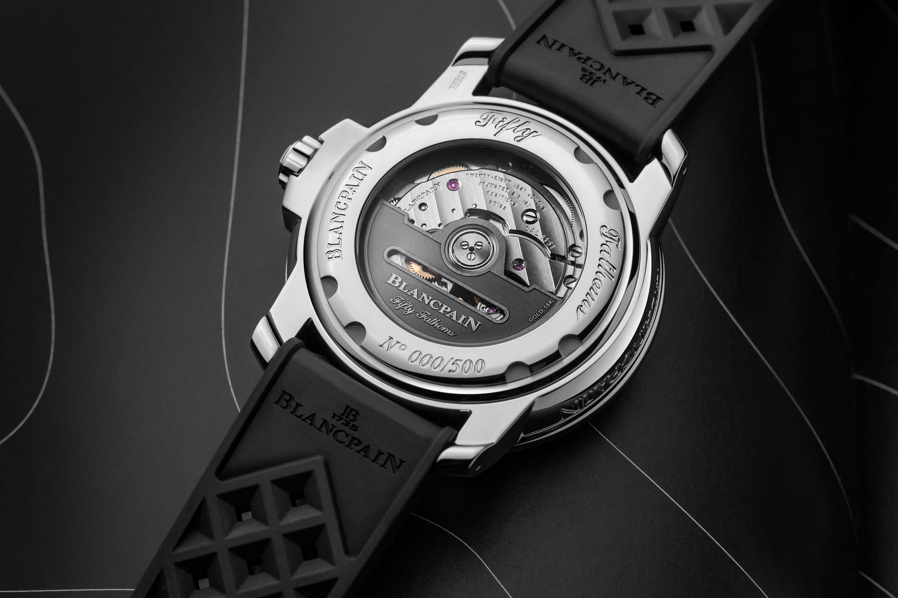

CFC & Maturité Professionnelle
Quatre années d'apprentissage en tant que dessinateur en construction microtechnique chez Simon & Membrez SA (Blancpain), combinées à l'obtention de la maturité professionnelle technique. Une période fondatrice où la précision est devenue une seconde nature.
Réalisations de cette période

Conception de Composants Horlogers
Durant mon apprentissage chez Simon & Membrez SA, j'ai été chargé de la conception de divers composants pour des boîtiers de montre. Ce travail demandait une précision extrême et une parfaite maîtrise des logiciels de CAO.
Mes missions comprenaient la modélisation 3D à l'aide de CATIA V5, la création de plans techniques détaillés en 2D pour la fabrication, et la vérification de la conformité des pièces avec les exigences horlogères. Chaque composant devait respecter des tolérances de l'ordre du centième de millimètre.
En parallèle, j'ai obtenu les certifications CATIA V5 Basic & Surface Watch, reconnaissant mon expertise dans la modélisation surfacique orientée horlogerie — une formation spécialisée que peu d'apprentis ont la chance de suivre.
Compétences acquises
Modélisation 3D avancée
CATIA V5 — pièces et assemblages complexes
Plans techniques 2D
Cotation, tolérances, normes horlogères
Précision microtechnique
Tolérances au centième de mm
Certifications CATIA V5
Basic & Surface Watch / Habillage